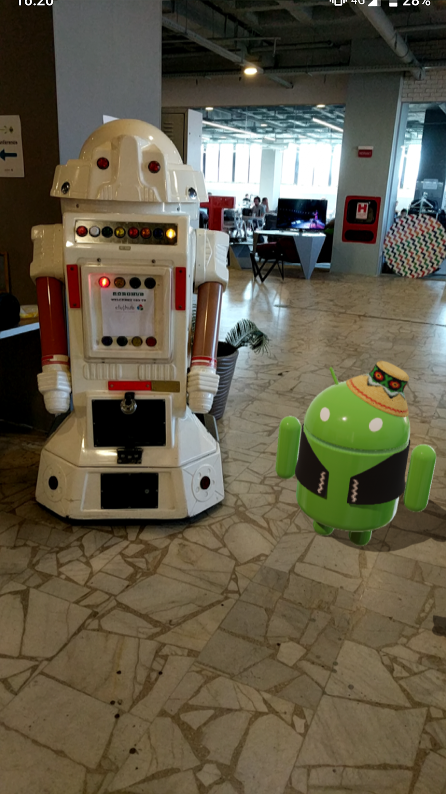
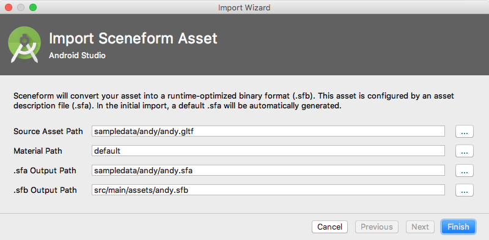
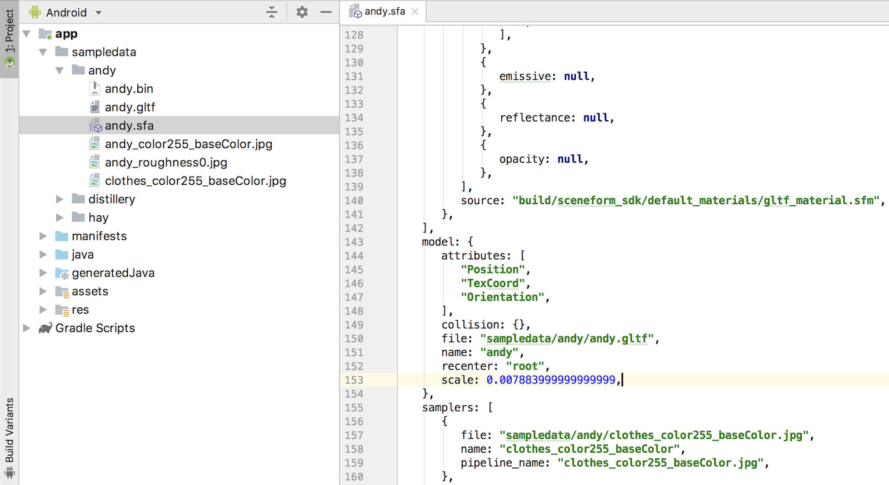
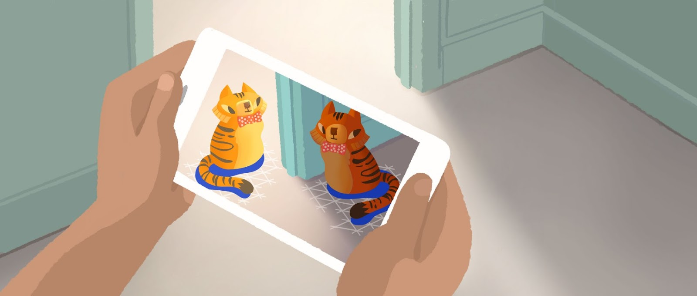

In order to start creating your first ARCore application, you need to install Android Studio version 3.1 or higher with Android SDK Platform version 7.0 (API level 24) or higher.
You can run AR apps on a supported device or in the Android Emulator:
There are additional requirements to run Sceneform apps in the emulator:
Make sure you are using the correct OpenGL ES version:
Check out the instructions to Create a Virtual Device to create a new emulator.
Configure the emulator to support AR applications:
Press and hold Option (macOS) or Alt (Linux or Windows) to access camera movement controls. Use the following controls to move the camera:
Move left or right | Hold Option + press A or D |
Move down or up | Hold Option + press Q or E |
Move forward or back | Hold Option + press W or S |
Change device orientation | Hold Option + move mouse |
Move left or right | Hold Alt + press A or D |
Move down or up | Hold Alt + press Q or E |
Move forward or back | Hold Alt + press W or S |
Change device orientation | Hold Alt + move mouse |
Release Option or Alt to return to interactive mode in the emulator.
Use the Virtual Sensors tab in Extended controls for more precise device positioning.
In order for us to import our own 3D models, we need to install the Sceneform Tools plugin that will help us achieve that.
In Android Studio open the Plugins settings:
Then click Browse repositories and install the Google Sceneform Tools (Beta).
Create a new Android project using the default settings and make sure the minimum API level is set to 24 (ARCore minimum). Make sure you have an empty initial Activity.
ARCore is Google's platform for building augmented reality experiences. Using different APIs, ARCore enables your phone to sense its environment, understand the world and interact with information. Some of the APIs are available across Android and iOS to enable shared AR experiences.
ARCore uses three key capabilities to integrate virtual content with the real world as seen through your phone's camera:
ARCore is designed to work on a wide variety of qualified Android phones running Android 7.0 (Nougat) and later. A full list of all supported devices is available here.
Fundamentally, ARCore is doing two things: tracking the position of the mobile device as it moves, and building its own understanding of the real world.
ARCore's motion tracking technology uses the phone's camera to identify interesting points, called features, and tracks how those points move over time. With a combination of the movement of these points and readings from the phone's inertial sensors, ARCore determines both the position and orientation of the phone as it moves through space.
In addition to identifying key points, ARCore can detect flat surfaces, like a table or the floor, and can also estimate the average lighting in the area around it. These capabilities combine to enable ARCore to build its own understanding of the world around it.
ARCore's understanding of the real world lets you place objects, annotations, or other information in a way that integrates seamlessly with the real world. You can place a napping kitten on the corner of your coffee table, or annotate a painting with biographical information about the artist. Motion tracking means that you can move around and view these objects from any angle, and even if you turn around and leave the room, when you come back, the kitten or annotation will be right where you left it.
For a more detailed breakdown of how ARCore works, check out fundamental concepts.
In this codelab, you're going to build an Augmented Reality application that uses ARCore and Sceneform:
|  |
In order for us to start writing AR code, we need to add the ARCore and Sceneform Gradle dependencies.
There are two types of AR apps: AR Required and AR Optional. For the purposes of this workshop, we will be making our application AR Required.
Apps that include optional AR features that are only activated on devices that support ARCore are referred to as AR Optional apps. For example, an Ikea store application that has a feature for interactively placing furniture around your house, but only on devices that support ARCore, may be referred as an AR Optional app.
To declare your app to be AR Optional, modify your AndroidManifest.xml to include the following entries:
<!-- AR Optional apps must declare minSdkVersion ≥ 14 -->
<uses-sdk android:minSdkVersion="14" />
<uses-permission android:name="android.permission.CAMERA" />
...
<application>
<meta-data android:name="com.google.ar.core" android:value="optional" />
...
</application>Apps that are not usable without AR are referred to as AR Required apps.
For more information, see Publishing AR Apps in the Play Store.
To declare your app to be AR Required, modify your AndroidManifest.xml to include the following entries:
<!-- AR Required apps must declare minSdkVersion ≥ 24 -->
<uses-sdk android:minSdkVersion="24" />
<uses-permission android:name="android.permission.CAMERA" />
<uses-feature android:name="android.hardware.camera" />
...
<application>
<meta-data android:name="com.google.ar.core" android:value="required" />
...
</application>Add the latest Sceneform library as a dependency in your app's build.gradle file:
android {
// Sceneform libraries use language constructs from Java 8.
// Add these compile options if targeting minSdkVersion < 26.
compileOptions {
sourceCompatibility 1.8
targetCompatibility 1.8
}
}
dependencies {
...
// Provides ArFragment, and other UX resources.
implementation 'com.google.ar.sceneform.ux:sceneform-ux:1.4.0'
// Alternatively, use ArSceneView without the UX dependency.
implementation 'com.google.ar.sceneform:core:1.4.0'
}In order to save time, please add now other dependencies we're going to use throughout the Workshop. We'll display Snackbars, so the design library needs to be added to gradle:
implementation 'com.android.support:design:28.2.1'If using ARCore without Sceneform and instead using native OpenGL, add it to your Android Studio project by performing these steps:
Make sure your project's build.gradle file includes Google's Maven repository:
allprojects {
repositories {
google()
...Add the latest ARCore library as a dependency in your app's build.gradle file:
dependencies {
...
implementation 'com.google.ar:core:1.4.0'
}Sceneform empowers Android developers to work with ARCore without learning 3D graphics and OpenGL. It includes a high-level scene graph API, realistic physically based renderer, an Android Studio plugin for importing, viewing, and building 3D assets, and easy integration into ARCore that makes it straightforward to build AR apps.
Sceneform provides two ways of integration for displaying objects: the ArFragment or ArSceneView. We'll use the ArSceneView as it allows us to get a more in-depth view over rendering, but here's how both are used.
Adding an ArFragment to your Activity is just like any Android Fragment. For example, here is a sample activity.xml:
<FrameLayout xmlns:android="http://schemas.android.com/apk/res/android"
xmlns:tools="http://schemas.android.com/tools"
android:layout_width="match_parent"
android:layout_height="match_parent">
<fragment android:name="com.google.ar.sceneform.ux.ArFragment"
android:id="@+id/ux_fragment"
android:layout_width="match_parent"
android:layout_height="match_parent" />
</FrameLayout>When the activity is launched and the layout is inflated, the fragment automatically performs some required checks:
Once complete, the fragment creates an ArSceneView (accessible via getArSceneView() and an ARCore Session.
This is the more verbose way of interacting with the AR view, as it implies making a lot of checks by yourself.
Add the ArSceneView to your layout xml:
<com.google.ar.sceneform.ArSceneView
android:id="@+id/ar_scene_view"
android:layout_width="match_parent"
android:layout_height="match_parent"
android:layout_gravity="top"/>You should obtain a reference to the ArSceneView as we'll need it later. And as long as we're there, make sure you have the permission to access the device's Camera:
arSceneView = findViewById(R.id.ar_scene_view);
ActivityCompat.requestPermissions(
activity, new String[] {Manifest.permission.CAMERA}, requestCode);We don't have the ArFragment to guard against all possible scenarios, so we should also check that the user's device supports ARCore:
if (Build.VERSION.SDK_INT < VERSION_CODES.N) {
Log.e(TAG, "Sceneform requires Android N or later");
Toast.makeText(activity, "Sceneform requires Android N or later", Toast.LENGTH_LONG).show();
activity.finish();
return false;
}
String openGlVersionString =
((ActivityManager) activity.getSystemService(Context.ACTIVITY_SERVICE))
.getDeviceConfigurationInfo()
.getGlEsVersion();
if (Double.parseDouble(openGlVersionString) < 3.0) {
Log.e(TAG, "Sceneform requires OpenGL ES 3.0 later");
Toast.makeText(activity, "Sceneform requires OpenGL ES 3.0 or later", Toast.LENGTH_LONG)
.show();
activity.finish();
return false;
}
return true;
}ARCore's Session manages the AR system's state and handles the session lifecycle. It can be viewed as the main entry point to ARCore API. This class allows the user to create a session, configure it, start/stop it, and most importantly receive frames that allow access to camera image and device pose.
Every time our Activity is resumed, we should make the basic sanity check of ensuring our ArSceneView's ARCore Session instance. And seeing that the Session is highly dependant on whether ARCore is installed on the user's device, we should check for that as well:
ArCoreApk.getInstance().requestInstall(activity, !installAlreadyRequested);The requestInstall call can return either:
After we've made sure we have all permissions and dependencies satisfied, we can go ahead and create our Session instance and pass it to the ArSceneView:
if (arSceneView.getSession() == null) {
Session session = new Session(activity);
// IMPORTANT!!! ArSceneView requires the `LATEST_CAMERA_IMAGE` non-blocking update mode.
Config config = new Config(session);
config.setUpdateMode(Config.UpdateMode.LATEST_CAMERA_IMAGE);
session.configure(config);
arSceneView.setupSession(session);
}As we've elected to go with the more complicated ArSceneView, we now realize that since it's a View, it has no information about the lifecycle (unlike the Fragment). Augmented Reality implies heavy processing, therefore we need to give our View hints about what our Activity's state is for the Resumed, Paused and Destroyed states.
@Override
protected void onResume() {
super.onResume();
if (arSceneView == null) {
return;
}
...
try {
arSceneView.resume();
} catch (CameraNotAvailableException ex) {
Toast.makeText(this, "Unable to get camera", Toast.LENGTH_SHORT).show();
finish();
return;
}
}
@Override
protected void onPause() {
super.onPause();
if (arSceneView != null) {
arSceneView.pause();
}
}
@Override
protected void onDestroy() {
super.onDestroy();
if (arSceneView != null) {
arSceneView.destroy();
}
}To help the user focus on what our device sees through its camera, we should also make sure our app is full screen. This is the standard way that you've used before. Hiding the navigation bar and buttons but allowing the user to swipe to reveal them:
@Override
public void onWindowFocusChanged(boolean hasFocus) {
super.onWindowFocusChanged(hasFocus);
if (hasFocus) {
// Standard Android full-screen functionality.
getWindow()
.getDecorView()
.setSystemUiVisibility(
View.SYSTEM_UI_FLAG_LAYOUT_STABLE
| View.SYSTEM_UI_FLAG_LAYOUT_HIDE_NAVIGATION
| View.SYSTEM_UI_FLAG_LAYOUT_FULLSCREEN
| View.SYSTEM_UI_FLAG_HIDE_NAVIGATION
| View.SYSTEM_UI_FLAG_FULLSCREEN
| View.SYSTEM_UI_FLAG_IMMERSIVE_STICKY);
getWindow().addFlags(WindowManager.LayoutParams.FLAG_KEEP_SCREEN_ON);
}
}You now have a basic AR app that allows you to view the device's camera and visualize flat surfaces, albeit with the default graphics. It doesn't do anything useful or fun, but it works!
We've been using a lot of Sceneform until now and you can't actually see when Google's AR framework steps in. The thing is, Sceneform is actually built upon ARCore so that technicalities are abstract until you need to do something a little more special. For basic Augmented Reality, you won't even need to interact with the augmented camera or positioning system. You'll only draw your objects and define their interaction.
Nevertheless, let's talk a bit about ARCore. This framework, at its base, will allow you to preview the camera frame (as it sees it), and provide you with features detected in the world. These features can be planes (horizontal or vertical), real objects or images we've been tracking. That's it. The rest is left to the 3D rendering API you will be using (either OpenGL or Sceneform) to make sure the virtual objects we are adding seem like part of the real world.
The ARCore Session can be considered as the main entry point in the entire API. You will need to create one, configure it, tell it when to start and stop. However, it's main job remains in receiving both the camera frames that are going to be processed and the device's pose when taking the said camera frames.
After setting it up as required, our remaining interaction with the Session will resume to:
As we've said before, one of ARCore's most important jobs is to track real objects and features and provide you with sufficient information related to them. We'll use this information to anchor our virtual objects somewhere in the real world, as we cannot just let them float around.
One extra reason we need Trackables is that ARCore automatically updates their location as it gathers more information about the real world. The more you move around, the more precise it will be in pinpointing their 3D position.
An anchor is closely related to a Trackable, as it defines a fixed location and orientation in the real world. To make sure it doesn't wiggle around and it stays fixed on that location, ARCore continuously updates it as it gathers knowledge.
Our interaction with Anchors will consist in tying them to our renderable objects. They represent our models' positions in space.
This is a representation of a flat planar surface detected by ARCore and the main Trackable we'll use to anchor our objects to. In most AR applications, models are rendered on a flat surface, like a table or the floor.
A lot of AR applications will use gestures to increase the immersiveness of your experience. Also, we've talked about Planes and Anchors. But how do we tie them together? This is where HitResults come into play. When a user performs a tap gesture for example, we can perform the intersection of the tap with a detected Plan and generate an Anchor for that position. This will now represent our object's location.
When using Sceneform to render our application, we need to start looking at our scene as a collection of 3D model graphs. An independent portion of the virtual world may be seen as a graph of objects attached to the scene, closely related one to another. A Node represents a transformation within the scene graph's hierarchy. It can contain a renderable for the rendering engine to render or other transformations. Each node can have an arbitrary number of child nodes but only one parent, which may be another node, or the scene.
The Node and the graph structure it resides in has many advantages:
Sceneform supports 3D assets in OBJ, FBX, and glTF formats. Please download these glTF assets that we're going to use throughout the session.
Follow these steps to import a new 3D asset:

glTF is the ideal format for us as it has been designed to be human readable. The advantage comes when we need to update certain parameters.
For instance, we want to make the andy and distillery models half the size. In order to do that, we only need to open their respective sfa file from the sampledata folder, find our entry and update its value. Please do that now:

As you can see, changing parameters such as material, textures or alpha maps can easily be changed using the glTF format.
In order for our models to be rendered by Sceneform, we need to load them into memory first. Doing this on demand (when we decide to render them) would result in massive input delays.
Sceneform's API allows us to asynchronously parse the sfb file created earlier when importing the models, as loading large objects can be time consuming (we don't want to delay the UI thread). For this purpose, we are going to use ModelRenderable which can return a classic Java CompletableFuture. After all our models are loaded into memory, we can simply use a flag to mark that this step is complete.
Run this step as soon as possible, for example when the Activity is created:
@Override
protected void onCreate(Bundle savedInstanceState) {
...
loadModels();
}
private void loadModels() {
CompletableFuture<ModelRenderable> andyStage =
ModelRenderable.builder().setSource(this, Uri.parse("andy.sfb")).build();
CompletableFuture<ModelRenderable> distilleryStage =
ModelRenderable.builder().setSource(this, Uri.parse("distillery.sfb")).build();
CompletableFuture<ModelRenderable> hayStage =
ModelRenderable.builder().setSource(this, Uri.parse("hay.sfb")).build();
CompletableFuture.allOf(
andyStage,
distilleryStage,
hayStage
).handle((notUsed, throwable) -> {
try {
andyRenderable = andyStage.get();
distilleryRenderable = distilleryStage.get();
hayRenderable = hayStage.get();
hasFinishedLoading = true;
} catch (InterruptedException | ExecutionException e) {
Snackbar.make(findViewById(android.R.id.content), "Couldn't load renderables", Snackbar.LENGTH_LONG).show();
}
return null;
});
}One very useful feature that Sceneform provides is translating a standard Android layout into a 3D view and render it into the ARCore provided camera frames. For this purpose, all we need to do is create our layout and append a new Renderable to our CompletableFuture stack.
We will be implementing a menu so the user can change which 3D model is going to be rendered. For now, the following layout will be fine:
<?xml version="1.0" encoding="utf-8"?>
<LinearLayout xmlns:android="http://schemas.android.com/apk/res/android"
android:orientation="vertical"
android:layout_width="wrap_content"
android:layout_height="wrap_content"
android:padding="4dp"
android:background="#444444FF">
<TextView
android:id="@+id/item_andy"
android:layout_width="wrap_content"
android:layout_height="wrap_content"
android:text="Andy"
android:textColor="@android:color/white"/>
<TextView
android:id="@+id/item_distillery"
android:layout_width="wrap_content"
android:layout_height="wrap_content"
android:text="Distillery"
android:textColor="@android:color/white"/>
<TextView
android:id="@+id/item_hay"
android:layout_width="wrap_content"
android:layout_height="wrap_content"
android:text="Hay"
android:textColor="@android:color/white"/>
</LinearLayout>Exactly as we've used the ModelRenderable to load 3D assets, we'll use its sibling class, ViewRenderable. Create its corresponding future and make sure we are handling taps inside the view:
CompletableFuture<ViewRenderable> menuStage =
ViewRenderable.builder().setView(this, R.layout.view_menu).build();
...
menuRenderable = menuStage.get();
menuRenderable.getView().findViewById(R.id.item_andy).setOnClickListener(this::onMenuItemClicked);
menuRenderable.getView().findViewById(R.id.item_distillery).setOnClickListener(this::onMenuItemClicked);
menuRenderable.getView().findViewById(R.id.item_hay).setOnClickListener(this::onMenuItemClicked);When the user selects an option from our menu, we will need to match it to the correct 3D renderable that we've loaded earlier. We'll see how to that after we successfully display our menu.
Before we could interact with the world through our phone, we have to make sure that ARCore is tracking at least one plane. Otherwise, we have no suitable Trackable to which we can attach our model's Anchor, and the user can't interact with our app.
In these cases, it is better to show some kind of feedback to the user, so he knows the state of the app. We'll work with a simple Snackbar for now:
private void showLoadingMessage() {
if (loadingSnackbar == null || !loadingSnackbar.isShownOrQueued()) {
loadingSnackbar =
Snackbar.make(
this.findViewById(android.R.id.content),
R.string.plane_finding,
Snackbar.LENGTH_INDEFINITE);
loadingSnackbar.show();
}
}
private void hideLoadingMessage() {
if (loadingSnackbar != null) {
loadingSnackbar.dismiss();
loadingSnackbar = null;
}
}After we've properly set up our Session, we can safely display the loading message. At this point we are sure ARCore has not detected anything:
if (arSceneView.getSession() != null) {
showLoadingMessage();
}Determining if ARCore has detected planes is not so straightforward though. We'll need to register a frame update listener, check if everything has been set up properly and then check if any Trackables of type Plane are being actively tracked right now:
@Override
protected void onCreate(Bundle savedInstanceState) {
...
arSceneView
.getScene()
.addOnUpdateListener(
frameTime -> {
// We've not displayed the loading Snackbar, no point in doing anything
if (loadingSnackbar == null) {
return;
}
// Check if a camera frame exists
Frame frame = arSceneView.getArFrame();
if (frame == null) {
return;
}
// Check if ARCore is actually tracking
if (frame.getCamera().getTrackingState() != TrackingState.TRACKING) {
return;
}
// If there is at least one Plane actively tracked, we can hide the loading Snackbar
for (Plane plane : frame.getUpdatedTrackables(Plane.class)) {
if (plane.getTrackingState() == TrackingState.TRACKING) {
hideLoadingMessage();
return;
}
}
});
}In order for us to start rendering our models, we need to specify their positions. Standard Android components come into play, as a simple GestureDetector is all that's required for us to detect a tap:
gestureDetector =
new GestureDetector(
this,
new GestureDetector.SimpleOnGestureListener() {
@Override
public boolean onSingleTapUp(MotionEvent e) {
return true;
}
@Override
public boolean onDown(MotionEvent e) {
onSceneTapped(e);
return true;
}
});We can now tie our gesture detector to the ArSceneView so it can start feeding touch events:
arSceneView
.getScene()
.setOnTouchListener(
(HitTestResult hitTestResult, MotionEvent event) -> {
gestureDetector.onTouchEvent(event);
// Return false so touch events are also transmitted to the scene
return false;
});Good. We now have a valid MotionEvent that took place over our AR view. We now need to determine if the user tapped anything meaningful, so we can do something with it. For example, we can determine if a Plane was tapped by iterating through all of them and testing if the hit location was inside its polygon.
private void onSceneTapped(MotionEvent tap) {
if (!hasFinishedLoading) {
// We can't do anything yet.
return;
}
Frame frame = arSceneView.getArFrame();
if (frame != null && tap != null
&& frame.getCamera().getTrackingState() == TrackingState.TRACKING) {
for (HitResult hit : frame.hitTest(tap)) {
Trackable trackable = hit.getTrackable();
if (trackable instanceof Plane
&& ((Plane) trackable).isPoseInPolygon(hit.getHitPose())) {
displayMenu(hit.createAnchor());
}
}
}
}We've successfully determined when and if the user tapped a detected Plane. Let's now do something useful with that information. We want to:
In order to make a Renderable appear on the screen, we need an Anchor to attach it to. We have that part covered by the tap handling mechanism. Next, we need to create a Sceneform Node object that attaches to the aforementioned Anchor and renders the correct Renderable.
To make sure we only display our menu once, we can keep track of the Anchor we've used to display it. If we want to stop displaying a model, all we need to do is detach its Anchor. One extra thing we need to make sure of is saving the base Node that's rendering our menu. Because we want to replace it with a 3D model, we need a way to stop rendering the menu, and that's by using the setEnabled method on the corresponding Node.
private void displayMenu(Anchor anchor) {
// Make sure we don't have more than one Menu displayed at a time
if (menuAnchor != null) {
menuAnchor.detach();
}
// Mark that we've displayed the menu
menuAnchor = anchor;
if (menuAnchorNode == null) {
// Actually render the menu
Node node = new Node();
node.setRenderable(menuRenderable);
menuAnchorNode = new AnchorNode();
menuAnchorNode.setParent(arSceneView.getScene());
menuAnchorNode.addChild(node);
}
menuAnchorNode.setAnchor(anchor);
menuAnchorNode.setEnabled(true);
}We can now implement the onMenuItemClicked method as per our requirements. We'll replace the Node associated with our menu Anchor with one that renders the chosen 3D model. We also make sure that we're telling Sceneform to stop rendering the menu at the same location:
private Node renderNodeForAnchor(Renderable renderable, Anchor anchor) {
Node node = new Node();
node.setRenderable(renderable);
AnchorNode anchorNode = new AnchorNode(anchor);
anchorNode.setParent(arSceneView.getScene());
anchorNode.addChild(node);
return node;
}
private void onMenuItemClicked(View view) {
if (menuAnchor != null) {
switch (view.getId()) {
case R.id.item_distillery:
renderNodeForAnchor(distilleryRenderable, menuAnchor);
break;
case R.id.item_hay:
renderNodeForAnchor(hayRenderable, menuAnchor);
break;
default:
renderNodeForAnchor(andyRenderable, menuAnchor);
break;
}
// We don't have a menu displayed anymore
menuAnchor = null;
menuAnchorNode.setEnabled(false);
}
}We've seen how user gestures over the real world shown by his device can be managed and actions can be performed as a consequence at the specified position. We will now see how we can interact with the 3D objects we've added to our scene and how we can animate them.
Our goal for this chapter will be making Andy go towards the hay or distillery (work or fun).
First of all, we should limit the number of 3D model types to one, so we avoid any confusion for Andy:
private Map<Renderable, Node> displayedObjects;
private Node renderNodeForAnchor(Renderable renderable, Anchor anchor) {
...
displayedObjects.put(renderable, node);
return node;
}
private void onMenuItemClicked(View view) {
if (menuAnchor != null) {
switch (view.getId()) {
case R.id.item_distillery:
if (displayedObjects.containsKey(distilleryRenderable)) {
displayedObjects.get(distilleryRenderable).getAnchor().detach();
}
renderNodeForAnchor(distilleryRenderable, menuAnchor);
break;
case R.id.item_hay:
if (displayedObjects.containsKey(hayRenderable)) {
displayedObjects.get(hayRenderable).getAnchor().detach();
}
renderNodeForAnchor(hayRenderable, menuAnchor);
break;
default:
if (displayedObjects.containsKey(andyRenderable)) {
displayedObjects.get(andyRenderable).getAnchor().detach();
}
renderNodeForAnchor(andyRenderable, menuAnchor);
break;
}
// We don't have a menu displayed anymore
menuAnchor = null;
menuAnchorNode.setEnabled(false);
}
}
One important thing you need to remember is that Sceneform's Nodes can be arranged as a tree, by using the parent / children relationships. Very complex 3D structures can be created this way. When a parent is disabled (not being drawn anymore), all its children are also disabled. There are a lot of other parameters that transfer to its children.
In order to change a Node's position, we have to alternatives we need to choose from:
In our case, it doesn't make much difference which way we go, as our Node trees contain a single Renderable and can't affect others.
The second phase is that when we're doing movement, we don't want to change the model's position from the start to its destination instantaneously. That would be weird. We want to create a smooth movement between the two points. For this purpose, we can use the standard Android ObjectAnimator and smoothly interpolate this transition:
private void animateNodeMovement(Node start, Node destination) {
ObjectAnimator movementAnimator = new ObjectAnimator();
Vector3 startPosition = start.getLocalPosition();
Vector3 endPosition = Vector3.subtract(destination.getWorldPosition(), start.getWorldPosition());
movementAnimator.setObjectValues(startPosition, endPosition);
movementAnimator.setPropertyName("localPosition");
movementAnimator.setEvaluator(new Vector3Evaluator());
movementAnimator.setInterpolator(new LinearInterpolator());
movementAnimator.setDuration(2000);
movementAnimator.setTarget(start);
movementAnimator.start();
}We now only need to know when to actually trigger this animation and between which nodes. For that, Sceneform provides a Touch and a Tap listener for rendered Nodes. Update our menu item clicked listener and mark the start and end Nodes as required:
private void onMenuItemClicked(View view) {
if (menuAnchor != null) {
switch (view.getId()) {
case R.id.item_distillery:
if (displayedObjects.containsKey(distilleryRenderable)) {
displayedObjects.get(distilleryRenderable).getAnchor().detach();
}
Node distilleryNode = renderNodeForAnchor(distilleryRenderable, menuAnchor);
distilleryNode.setOnTapListener((hitTestResult, motionEvent) -> {
animateNodeMovement(animatedNode, distilleryNode);
});
break;
case R.id.item_hay:
if (displayedObjects.containsKey(hayRenderable)) {
displayedObjects.get(hayRenderable).getAnchor().detach();
}
Node hayNode = renderNodeForAnchor(hayRenderable, menuAnchor);
hayNode.setOnTapListener((hitTestResult, motionEvent) -> {
animateNodeMovement(animatedNode, hayNode);
});
break;
default:
if (displayedObjects.containsKey(andyRenderable)) {
displayedObjects.get(andyRenderable).getAnchor().detach();
}
Node andyNode = renderNodeForAnchor(andyRenderable, menuAnchor);
andyNode.setOnTapListener((hitTestResult, motionEvent) -> {
animatedNode = andyNode;
});
break;
}
// We don't have a menu displayed anymore
menuAnchor = null;
menuAnchorNode.setEnabled(false);
}
}There are three main properties we can alter to make our scene more interactive: position, rotation and scale. By working with them, we can create interesting and engaging interactions.
ARCore and Sceneform provide extensive support in lighting of our models.
The first and foremost feature is approximating the intensity and direction of the natural light in the environment. These parameters are then changing how our model is being rendered, it can be more lit or darker, increasing the realism of the scene.

The second feature of the environmental lighting is its ability to cast shadows of your rendered objects. One important thing to remember is that:
If we expect the environment to be poorly lit or our scene demands it, we can add more lighting in our scene by using the Light Sceneform class. We have a couple of light types we can use:
After we've set all parameters for our light, we can go ahead and set it on one of our Nodes so we can set its location and bind it to our Scene. Just remember that no additional lights can actually brighten the natural environment!
private void lightUpAndy(Node andyNode) {
Light yellowSpotlight = Light.builder(Light.Type.SPOTLIGHT)
.setColor(new Color(android.graphics.Color.YELLOW))
.setShadowCastingEnabled(true)
.build();
andyNode.setLight(yellowSpotlight);
}By default, Sceneform renders detected planes using a series of dots drawn over them. Depending on our app's desired behavior, we can disable that altogether or change the texture drawn over them.
Download this texture and lets make the planes more funky. First of all, copy the image to your drawables folder. Afterwards, create a Texture sampler to go with our image, and set it to our ArSceneView. Be careful though, there are some async operations going on:
private void setPlaneRendererTexture() {
Texture.Sampler sampler =
Texture.Sampler.builder()
.setMinFilter(Texture.Sampler.MinFilter.LINEAR)
.setMagFilter(Texture.Sampler.MagFilter.LINEAR)
.setWrapMode(Texture.Sampler.WrapMode.REPEAT)
.build();
Texture.builder()
.setSource(this, R.drawable.custom_texture)
.setSampler(sampler)
.build()
.thenAccept(texture -> {
arSceneView
.getPlaneRenderer()
.getMaterial()
.thenAccept(material -> {
material.setTexture(PlaneRenderer.MATERIAL_TEXTURE, texture);
});
});
}As you can see, it needs a fully set up ArSceneView to work, and as we only need to do this once, we can safely call this method after we've set up our ArSceneView's Session.
Creating complex interactions or AR games will always require knowing when two objects are touching. If it's a canon's projectile, a bullet, or any other model we want, Sceneform adds a mechanism which notifies us when two Nodes have collided. Each Node or Renderable can be set a CollisionShape, that's either a Box or Sphere.
The API provides two types of collision testing:
For our exercise, we'll make the hay or distillery disappear when Andy touches them. All we need to do is test for overlapping after our move animation finishes. If the Scene detects Andy's collision shape has touched another one, it provides us with the collided Node:
private void animateNodeMovement(Node start, Node destination) {
ObjectAnimator movementAnimator = new ObjectAnimator();
Vector3 startPosition = start.getLocalPosition();
Vector3 endPosition = Vector3.subtract(destination.getWorldPosition(), start.getWorldPosition());
movementAnimator.setObjectValues(startPosition, endPosition);
movementAnimator.setPropertyName("localPosition");
movementAnimator.setEvaluator(new Vector3Evaluator());
movementAnimator.setInterpolator(new LinearInterpolator());
movementAnimator.setDuration(2000);
movementAnimator.setTarget(start);
movementAnimator.start();
new Handler().postDelayed(() -> {
Node collidedNode = arSceneView.getScene().overlapTest(start);
if (collidedNode != null) {
collidedNode.setEnabled(false);
}
}, 2000);
}Sometimes, using the basic Node structure is not enough. Extending the Node class provides some extra useful functionality: